USMR Lecture 4
What stats is all about
Milan Valášek
Before we start
- Any questions about last week’s matters?
Today
- Statistical models
- Hypotheses
- More probability distributions
- Null hypothesis significance testing
Modelling the world
What are models?
- Representations of reality
- Abstractions – They focus on specific aspects and disregard others
- Generalisations – They often aim to describe not just one instance of a category but the relevant features of the category itself
Statistical models
- In essence they are mathematical model – express relationships between variables using equations
- Make use of assumptions in order to generalise from sample to population
- Quantify the uncertainty related to random sampling from populations
- There is always a discrepancy between what the model predicts and the data
- If a model fits the data perfectly, it is a bad model
Models as best guesses
- You can think of statistical models as best guesses given certain amount of information available
- If you have a sample of a normally distributed variable, what is the best guess about the value of a random draw from the same population in the absence of any other information?
- The mean
Models as best guesses
- Example – Data on active vocabulary size from 100 people
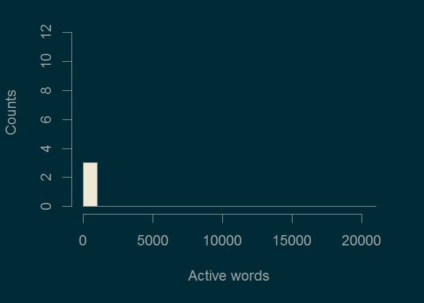
Models as best guesses
- Example – Data on active vocabulary size from 100 people
- The simplest model for a continuous variable is the mean
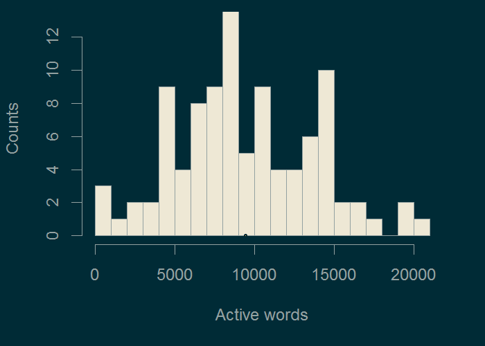
Modeling relationships
- Though basic descriptive statistics are models, they’re not very good because they are naïve – they don’t make use of any additional information
- Often, we want to model relationships between things, e.g. outcome on the one hand and experimental manipulation/independent variable on the other
- What is the best guess I can make about the value of the outcome, if I know something about the predictor?
- All the tests that include at least one continuous variable that we will talk about model this kind of a relationship as a line – this is the linear model
The Linear Model
- Example – Say we add age data from the same participants
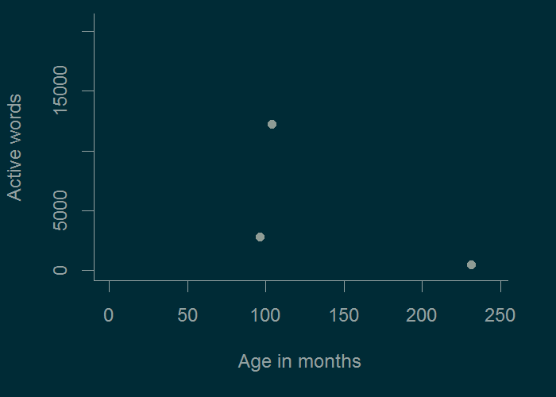
The Linear Model
- Example – Say we add age data from the same participants
- We can disregard any information in age predictive of active vocab

The Linear Model
- Example – Say we add age data from the same participants
- We can disregard any information in age predictive of active vocab
- We know that a linear function has a slope and intercept – so does a linear model
- Mean is a linear model: \(\widehat{vocab} = \bar{vocab} + 0\times age\)
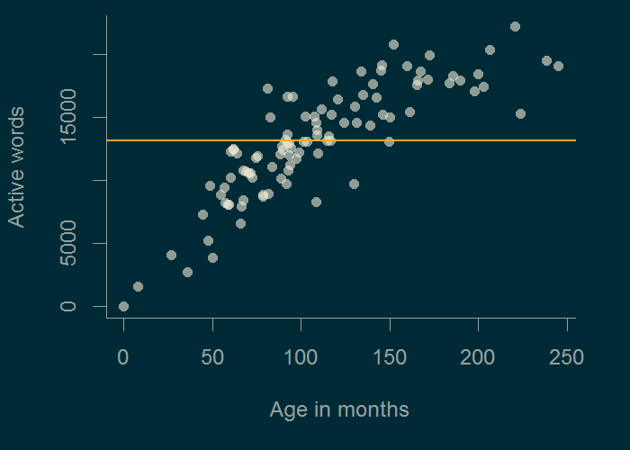
The Linear Model
- Mean is the simplest model (AKA the null model) – it’s not very good
- Can we do any better?
- There’s clearly a relationship between age and vocab so let’s make use of it
The Linear Model
- Mean is the simplest model (AKA the null model) – it’s not very good
- Can we do any better?
- There’s clearly a relationship between age and vocab so let’s make use of it
\(\widehat{vocab} = 1201.64 + 75.11\times age\)

The Linear Model
- Some models capture (fit) the data better than others
- Perfect fit is not desirable
- Models with perfect fit do not generalise
- They have no predictive utility
- All non-perfectly fitting models have residuals
The Linear Model
- Some models capture (fit) the data better than others
- Perfect fit is not desirable
- Models with perfect fit do not generalise
- They have no predictive utility
- All non-perfectly fitting models have residuals
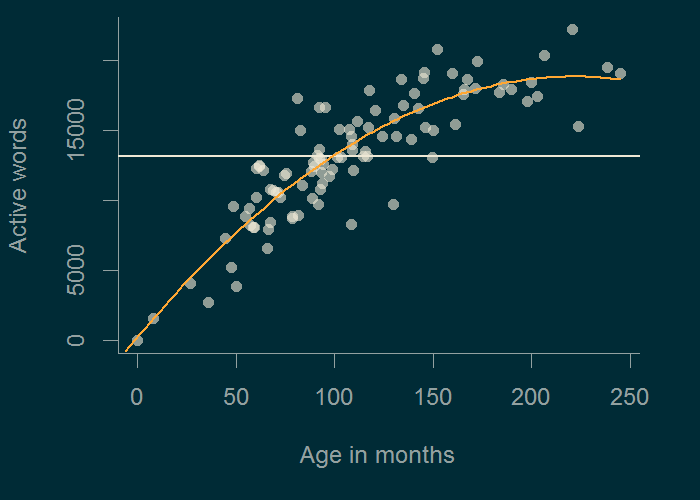
Some vocab
- Outcome is the variable we are modelling (AKA dependent variable in experimental setting)
- Predictors are variables we are using to model the outcome (AKA independent variable)
- Prediction is the value of outcome produced by the model
- prediction = model
\(\widehat{vocab} = 1201.64 + 75.11\times age\) - for age of 20 years (240 months):
\(19228 = 1201.64 + 75.11\times 240\)
Some vocab
- Observation is the actual observed value in the data
- observation = model + residual
\(vocab = 1201.64 + 75.11\times age + \varepsilon\)
- Residual is then the difference between what the model predicts and what we observe
\(\varepsilon = \hat{y} - y\)
Accuracy/generalisability trade-off
- We want a good fit (small residuals) but not at all costs (too many parameters)
- The more specific a model is to particular data, the less well it generalises
- There is a trade-off between how well a model fits the data and how parsimonious it is (i.e., how many parameters it includes)
Accuracy/generalisability trade-off
- Two parameters: one for intercept and one for slope
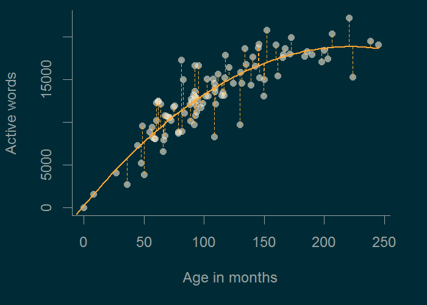
Accuracy/generalisability trade-off
- Many parameters!
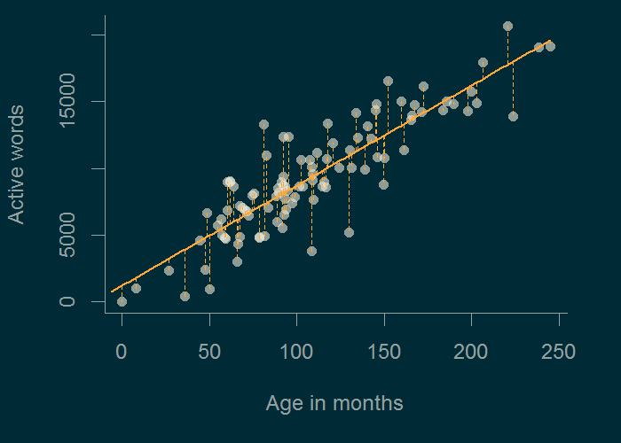
Take-home message
- Models are generalisable abstractions that describe and predict behaviour of things in the world and relationships between them
- Linear models use the linear function – basically drawing a line through a scatter plot – to predict outcome using predictors
- Even simple models, e.g., mean can be seen as linear models (slope = 0)
- Models with a perfect fit are useless
- More complex models will always fit better, this is not always good
“All models are wrong but some are useful” ~ George Box
What if?
Research hypotheses
- Statement about something in the world
- Shape of the population distribution of a variable
- Population parameters (e.g., central tendency)
- Relationships between things – variables in population
- Must be testable – it must be possible for the data to either support or disconfirm a hypothesis
- Should be about a single thing
Research hypotheses
Good hypothesis: “The recent observed rising trend in global temperatures on Earth is primarily driven by human-produced greenhouse gas emissions.”
Bad hypothesis: “Homoeopathic products can cure people, but sometimes they make them worse before they make them better, and the effect is only apparent subjectively with respect to some vague ‘holistic’ notions rather than a specific well-defined and testable set of criteria.”
Also bad: “Vocabulary size depends on age or education.”
Operationalisation
- To be able to formulate a hypothesis in statistical terms, we first need to get from the conceptual level to the level of measurement
- Operationalisation is the process of defining variables in terms of how they are measured
- The concept of intelligence can be operationalised as total score on Raven’s Progressive Matrices
- The concept of vowel backness is operationalised as the second formant of the voice (F2)
Model formulation
- Once we know what specific question we are asking and how it maps onto measurable quantities, we can formulate the statistical model
- We operationalise vocabulary size as the estimate based on the number of words generated in a verbal fluency test and age as age in months
- We predict that vocab size depends on age
\(vocab = \beta_0 + \beta_1 \times age_{mon} + \epsilon\)
Statistical hypotheses
- From the model formulation, we can derive the following hypothesis:
- Some relationship –
\(H_a: \beta_1 \ne 0\)
- Some relationship –
Statistical hypotheses
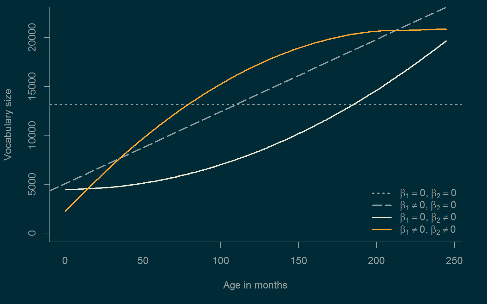
The null hypothesis
- Testing the claim there is some sort of relationship is difficult
- A way around this is to negate the hypothesis (there are other approaches)
- This negation (or complementary hypothesis) is know as the null hypothesis
\(H: x \ne 0\) \(H_0: x = 0\)
The null hypothesis
- Some relationship –
\(H_a: \beta_1 \ne 0\) - Independence –
\(H_{0a}: \beta_1 = 0\) - We don’t test the research hypothesis, we test the null hypothesis
- The null doesn’t have to be about zero but often is!
Testing the null
It’s all Greek to me!
- Noticed how we used
\(\beta\) s in the model but\(b\) s in the equation for the linear function?- Any idea why?
- Think back to the
\(\mu\) –\(\bar{x}\) or the\(\sigma\) –\(s\) distinction
From sample to population
- \(\beta\)s refer to the population parameters – the characteristics of the relationship between age and vocab in the population
- We can’t directly measure the \(\beta\)s
- \(b\)s are the model parameters based on our sample
- We can fit a model to our sample and get the \(b\)s
- We don’t much care about the sample, we want to know about the population parameters!
The problem with samples
- Let’s simulate some data on age and IQ
- Even if there’s no relationship in the population (\(\beta = 0\)), we can get a non-zero \(b\) for age
# simulate population for age
age <- rnorm(10^6, 10, 2)
# simulate population for IQ with NO RELATIONSHIP to age
iq <- rnorm(10^6, 100, 15)
mod_pop <- lm(iq ~ age)
coef(mod_pop) # see that there's really no relationship
(Intercept) age
100.039644700 -0.005829138 sample <- sample(10^6, 20) # sample 20 numbers 1 - 1 million
coef(lm(iq[sample] ~ age[sample])) # see the relationship in the sample
(Intercept) age[sample]
63.124858 3.940927 The problem with samples
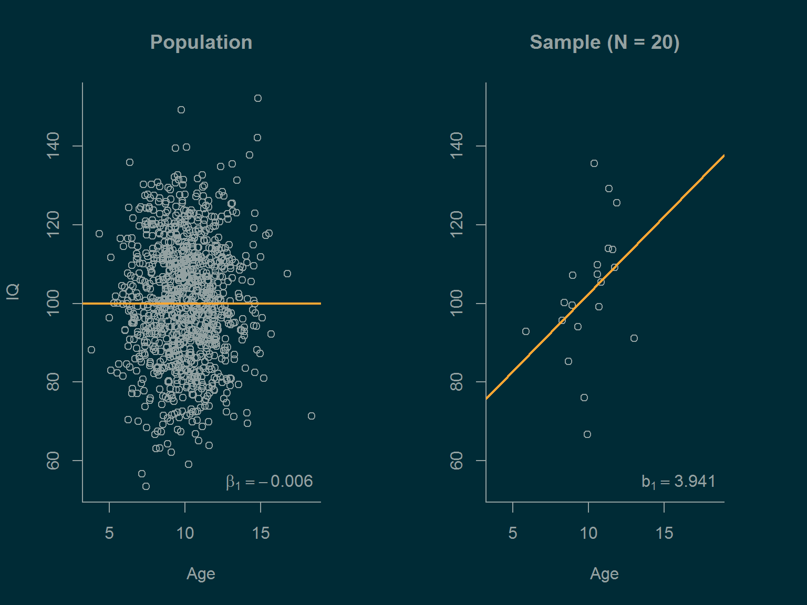
The problem with samples
- We simulated a population where there’s no relationship between age and IQ
- The model fitted to the sample says that IQ goes up by almost 4 points per year
- We need some way of making inferences about the true value of unobservable \(\beta\) from the observed \(b\)
- One way is using Null hypothesis significance testing (NHST)
NHST
- Approach to testing scientific hypotheses created in 1940 by Everett Lindquist
- Based on two separate approaches developed in the 1920s
- Ronald Fisher’s tests of significance (null hypothesis, p-value)
- Jerzy Neyman and Egon Pearson’s tests of statistical hypotheses (effect size, statistical power)
- Heavily criticised from its inception but gained prominence nonetheless
- There are alternatives (estimation statistics, Bayesian statistics)
NHST
- Formulate a research hypothesis
- Formulate the null hypothesis
- Choose appropriate test statistic
- Define the probability distribution of the test statistic under the null hypothesis
- Gather and analyse (enough) data – calculate sample test statistic
- Get the probability of the value you got under the null hypothesis
- If the observed value is likely under the null, retain the null
- If it is unlikely under the null, reject the null in favour of research hypothesis, celebrate!
Hypotheses
- Model:
\(IQ = \beta_0 + \beta_1 \times age + \epsilon\) - Research hypothesis:
- There is a relationship between age and IQ
- \(H: \beta_1 \ne 0\)
- Null hypothesis:
- There is no relationship between age and IQ
- \(H_0: \beta_1 = 0\)
Data and analysis
- We tested 20 imaginary people (definitely not enough!)
- We fit the linear model and found the value of \(b_1 = 3.94\)
Test statistic and its distribution
- We want to know how far our observed \(b_1\) is from the one expected under \(H_0\), i.e., \(3.941 - 0\)
- To assess the probability of this value, we need to know its sampling distribution
- As discussed last time, sampling distribution is the distribution of some statistic based on all possible samples of a given size
- In practice, we can’t repeat our study thousands of times to get the sampling distribution
- We can simulate though!
Test statistic and its distribution
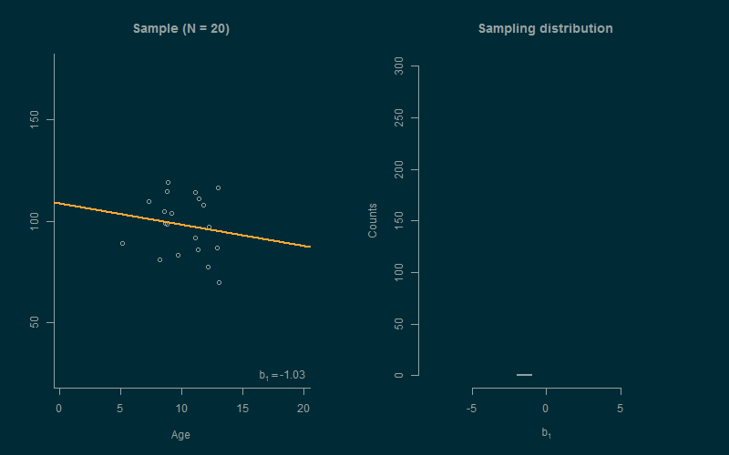
Test statistic and its distribution
Test statistic and its distribution
- With the benefit of knowing the sampling distribution, we have access to the SE of our \(b_1\)
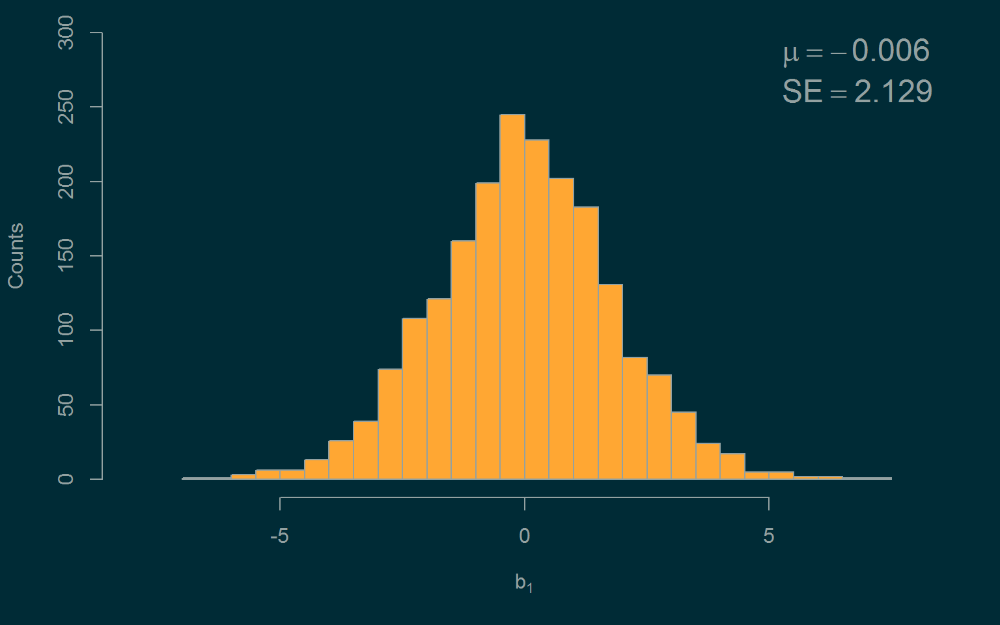
Test statistic and its distribution
- We can now standardise our difference between observed and expected slope by dividing (scaling) it by SE
- Let’s call this standardised test statistic z
\(z = \frac{b_1 - \beta_1}{SE} = \frac{b_1 - 0}{SE} = \frac{3.941}{2.129} = 1.851\) - This statistic tells us the distance between observed and expected values of the slope parameter in standard units (independent of measurement units of age)
Probability of the observed statistic
- We can assess the probability of getting the observed value or a more extreme value of z if z is from our null hypothesis sampling distribution
- If we are looking only at one tail of the distribution, this is called a one-tailed test
z_dist <- scale(b, F) # b/SE
sum(z_dist >= 1.851)/length(z_dist) # 1-tailed test
[1] 0.0335Probability of the observed statistic
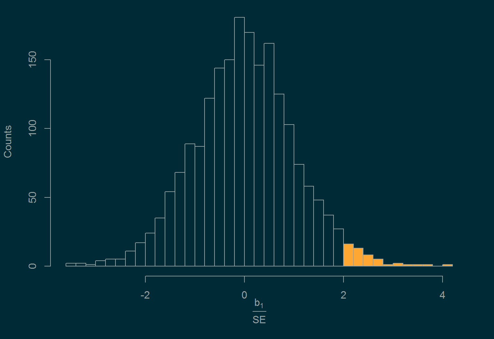
Probability of the observed statistic
- Usually, we are interested in non-directional hypotheses – we don’t care if the relationship is positive or negative
- We are therefore looking at both tails of the distribution – a two-tailed test
z_dist <- scale(b) # b/SE
sum(abs(z_dist) >= 1.851)/length(z_dist) # 2-tailed test
[1] 0.066Probability of the observed statistic
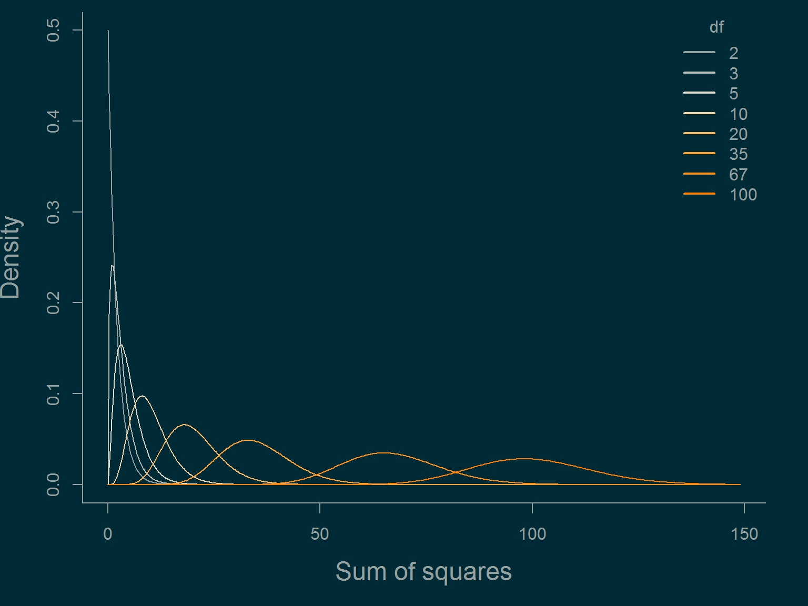
Probability of the observed statistic
- We can also rely on CLT and assume the sampling distribution of z is standard normal (\(\mu = 0\) and \(\sigma = 1\))
# pnorm(x, lower tail = F) gives probability of x or larger
pnorm(1.851, lower.tail = F) # 1-tailed test
[1] 0.03208478
pnorm(1.851, lower.tail = F) * 2 # 2-taild test
[1] 0.06416955Decision
- Conventionally, we require the probability of a statistic under \(H_0\) to be less than 5% to consider the result unlikely enough to reject the null
- Other conventional levels of significance are \(p < .01\) and \(p < .001\)
- The observed value of the test statistic based on \(b_1 = 3.94\) and a sample of 20 is relatively likey in a world where \(\beta_1 = 0\) (\(p = .066\) under a 2-tailed test)
- We retain the null hypothesis and say that we found no evidence of a relationship
Take-home message
- Hypotheses should be clearly formulated, testable, and operationalised
- Statistical hypotheses are statements about values of some parameters
- Null hypothesis (usually, parameter is equal to 0) is the one we test (in NHST framework)
- We can only observe samples, but we are interested in populations
- Due to sampling error, we can find a relationship in sample even if none exists in population
- NHST is one way of deciding if sample result holds in population – understanding it is crucial!
Plus ça change…
Different shapes, same principle
- We already encountered the uniform, binomial, and normal distributions
- There are many more (see this nerdtastic web page)
- Of particular interest are the
\(\chi^2\) -distribution, Student’s t-distribution, and F-distribution families - There are important differences between the normal distribution on the one hand and these others on the other
- Main principle behind how we make use of them is the same!
Differences
- We talked about how the basic shape of the normal distribution doesn’t change with changing parameters
- The proportions stay the same – the scaled (standardised) distributions are all identical
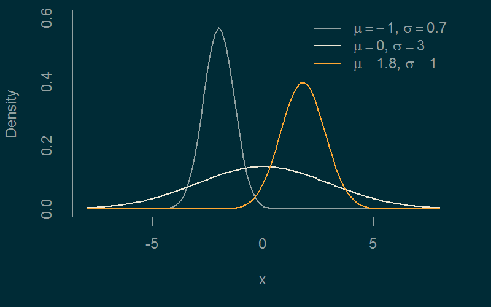
Differences
- We talked about how the basic shape of the normal distribution doesn’t change with changing parameters
- The proportions stay the same – the scaled (standardised) distributions are all identical
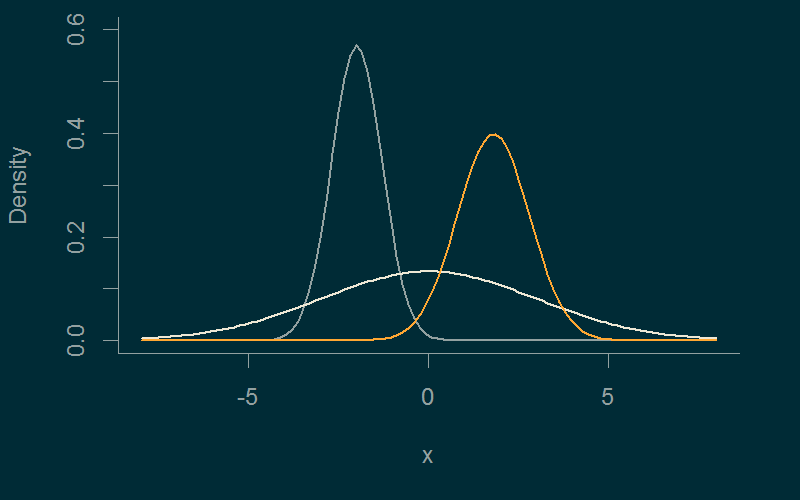
Differences
- We talked about how the basic shape of the normal distribution doesn’t change with changing parameters
- The proportions stay the same – the scaled (standardised) distributions are all identical
- This is not the case with the
\(\chi^2\) -, t-, and F-distribution families- Changing parameters result in genuinely different shapes with different probabilities for any given interval
- They are not defined by \(\mu\) and \(\sigma\) but by degrees of freedom
- Number of values that are free to vary given a certain value of some parameter
- If the mean of three numbers is, say, 10, two of them can be anything
Similarities
- Just like the normal distribution, the individual distributions have algebraic descriptions
- We know what the probability density function of each one is given number of degrees of freedom
- This allows us to know what the probability of an arbitrary interval of values for any of the distributions
pnorm(1.959964) # 97.5% of data is less or equal in a standard normal
[1] 0.975
pt(1.959964, 2) # t with 2 dfs - 90.55%
[1] 0.9054688
pt(1.959964, 10) # t with 10 dfs - 96.1%
[1] 0.9607795
pf(1.959964, 4, 20) # F with 4 and 20 dfs - 86%
[1] 0.8602845Recap on normal distribution
- Describes variables that result from interactions of many factors with small effects each
- CLT states that the sampling distribution of the mean (and some other parameters) is normal
\(\bar{x}\) is an approximately normally distributed variable with mean of\(\mu\) and SD equal to the standard error- Standard error is calculated as population SD over square root of sample size,
\(SE = \sigma / \sqrt{n}\) - In practice, we don’t know the value of \(\sigma\), we estimate it from sample
\(s\)
\(\chi^2\) -distribution
- Described independently by Friedrich Robert Helmert (1985-6) and Karl Pearson (1900)
- Pearson was interested in assessing model fit
- Helmert wanted to know the sampling distribution of the variance
\(s^2 = \frac{\sum\limits_{i=1}^N{(x_i - \bar{x})^2}}{N-1}\) - Denominator just scales the variable so doesn’t change the distribution
- Boils down to “what is the sampling distribution of sum of squares?”
\(\chi^2\) -distribution
- \(\chi^2\)-distribution with \(N\) df describes the sampling distribution of sum of squares of a sample of size \(N\)
# 10^6 draws from std. normal distribution
xmat <- matrix(scale(rnorm(10^6)), ncol = 10)
# since N = 1 we don't need to sum anything,
# we just square each "sample"
ss <- xmat[ , 1]^2 # sample size = 1 (single column of xmat)
ss_1 <- ss[ss <= 10]
hist(ss_1, breaks = 50, freq = F, main = "N = 1",
xlim = c(0, 10), xlab = "Sum of squares")
# x coordinates of line
x_coord <- seq(0, 10, length.out = 100)
# chi^2 distribution with N df
lines(x_coord, dchisq(x_coord, 1), col = colors[3], lwd = 2)\(\chi^2\) -distribution

\(\chi^2\) -distribution
- Nothing special about 1st column
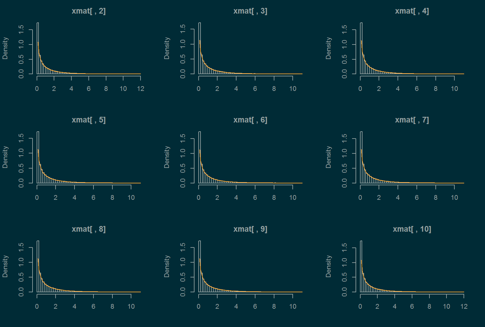
\(\chi^2\) -distribution
- The shape of the distribution changes dramatically as a function of df
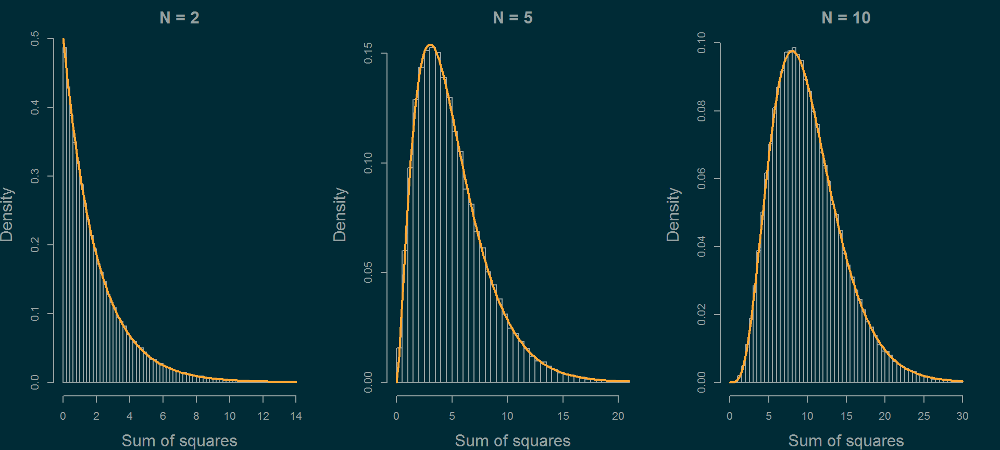
\(\chi^2\) -distribution

\(\chi^2\) -distribution
Why is this useful?
- Many statistical procedures rely on the fact that \(\sigma^2\) / \(SD\)* / sums of squares of independent variables follow the
\(\chi^2\) -distribution - Think of the mean as a model
- \(SD\) (spread of data around the mean) can be seen as a measure of how well the model fits the data
*This is only true if the variable we’re sampling from is normally distributed with a variance of \(\sigma^2\)
\(\chi^2\) -distribution
Why is this useful?
- If \(SD\) is large, the mean doesn’t really describe much of the data very accurately
- The larger the \(SD\), the higher value of
\(\chi^2\) , and the worse the fit of the model - This principle generalises to other kinds of models (including the linear model)
\(\chi^2\) -distribution helps us quantify how well (badly) our model fits the data- This is very useful
Student’s t -distribution
- First described by William Sealy Gosset in the early 1900s
- Interested in inferring from small samples
The task
- How do we know the probability of getting some
\(\bar{x}\) if true mean\(\mu\) is 0? - We can standardise the distribution of
\(\bar{x}\) by centring around\(\mu\) and scaling it by\(SE\) (our z-statistic from earlier on) \(\frac{\bar{x} - \mu}{SE} = \frac{\bar{x} - \mu}{\sigma / \sqrt{n}}\) follows a standard normal distribution and so we know the probability above any given value of\(\bar{x}\)
Student’s t -distribution
The problem
- We don’t know
\(\sigma\) ! - We can only estimate std. error as
\(\widehat{SE} = s / \sqrt{n}\) \(\widehat{SE}\) is not a single number, it is a variable that follows a\(\chi^2\) -distribution with \(n-1\) degrees of freedom- Once we scale by
\(\widehat{SE}\) instead of\(SE\) , the variable is no longer standard normal
Student’s t -distribution
The solution
- Luckily, the Student’s t-distributed with \(n-1\) degrees of freedom is the distribution a normal variable divided by a
\(\chi^2\) variable - Doesn’t only apply to
\(\bar{x}\) but also to\(b\)s (and some other parameters) - Especially useful when \(n\) is small
Student’s t -distribution
The demonstration
n <- 4 # set n
# 10^5 samples from std. normal distribution of size n = 4
xmat <- matrix(scale(rnorm(n*10^5)), ncol = n)
x_bar <- apply(xmat, 1, mean) # sample means
sd_x <- apply(xmat, 1, sd) # sample SDs
t_stat <- x_bar/(sd_x/sqrt(n)) # t-statistic
t_stat2 <- t_stat[abs(t_stat) <= 5] # only values between -5 and 5
hist(t_stat2, breaks = 50, freq = F, main = "",
ylim = c(0, dnorm(0)), xlab = "t-statistic")
legend("topright", legend = c("N(0,1)", "t(3)"),
lty = 1:2, lwd = 1:2, col = colors[c(1, 3)], bty = "n")
# x coordinates of lines
x_coord <- seq(-5, 5, length.out = 100)
# standard normal distribution
lines(x_coord, dnorm(x_coord), col = colors[1], lty = 2)
# t(n-1) distribution
lines(x_coord, dt(x_coord, n-1), col = colors[3], lwd = 2)Student’s t -distribution
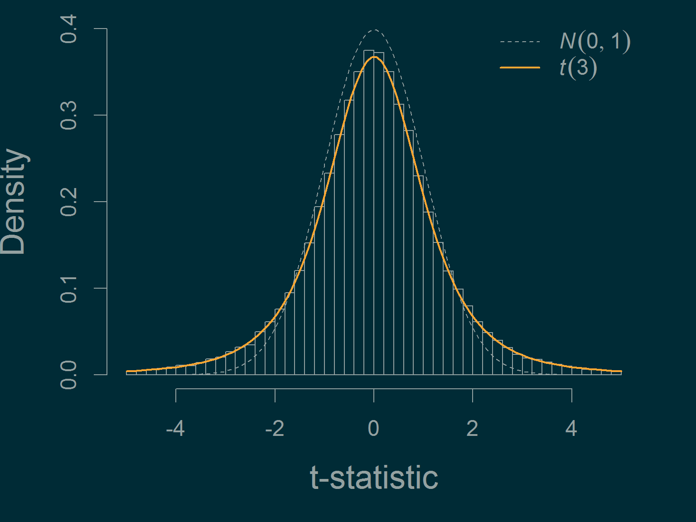
Student’s t -distribution
quantile(t_stat, .025) # empirical cutoff for bottom 2.5%
2.5%
-3.175507
qnorm(.025) # theoretical cutoff for bottom 2.5% - std normal
[1] -1.959964
qt(.025, n-1) # theoretical cutoff for bottom 2.5% - t(n-1)
[1] -3.182446
# if we use t-distribution to find cutoffs it's close enough
sum(t_stat <= qt(.025, n-1))/length(t_stat)
[1] 0.0249
# if we use the normal, we'll be mniles away
sum(t_stat <= qnorm(.025))/length(t_stat)
[1] 0.07168Student’s t -distribution
- As \(n\) gets bigger:
- The distribution of
\(\bar{x}\) approaches normal \(\widehat{SE}\) approaches\(SE\) - Number of df gets bigger
- Therefore
\(\frac{\bar{x} - \mu}{\widehat{SE}}\) approaches standard normal
- The distribution of
- As the number of df tends to infinity, t-distribution approaches…?
Student’s t -distribution
- As the number of df tends to infinity, t-distribution approaches normal
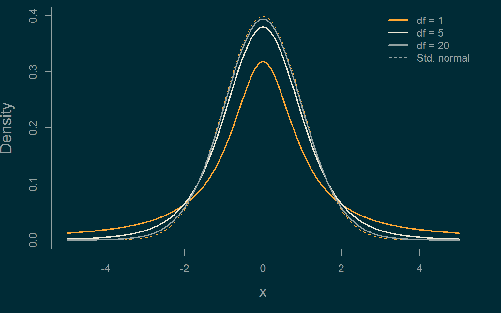
Student’s t -distribution
Why is this useful?
- Often we want to know if a sample statistic comes from a population with a given \(\mu\)
- However, we don’t know the \(\sigma\) of this population, we can only estimate is as \(\widehat{SE}\) of the sampling distribution of the statistic
- t-distribution allows us to quantify the probability of the given sample statistic or a more extreme one if the true population parameter has some other value
F -distribution
- Developed by George Waddel Snedecor and named in honour of Ronald Fisher
- Describes the distribution of a variable arising from a ration of two independent
\(\chi^2\) -distributed variables scaled by their respective dfs- For that reason, it is characterised by two numbers of degrees of freedom (one for each constituent variable)
- Widely used in Analysis of variance (ANOVA) and for comparing two models
F -distribution
df1 <- 30; df2 <- 12
var1 <- rchisq(10^5, df1) # 10^5 random chi^2 with df = df1
var2 <- rchisq(10^5, df2)
x <- (var1/df1)/(var2/df2)
x <- x[x<=10]
hist(x, breaks = 50, freq = F, main = "",
xlab = expression(frac(var1/df1, var2/df2))
# x coordinates of line
x_coord <- seq(0, 10, length.out = 200)
# F-distribution with df1 and df2 degrees of freedom
lines(x_coord, df(x_coord, df1, df2), col = colors[1], lty = 2)F -distribution
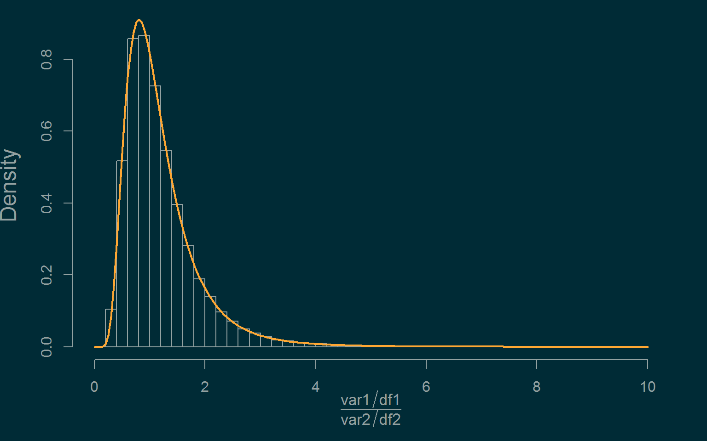
F -distribution
- Just like with
\(\chi^2\) -distribution, the shape of the F-distribution changes a lot
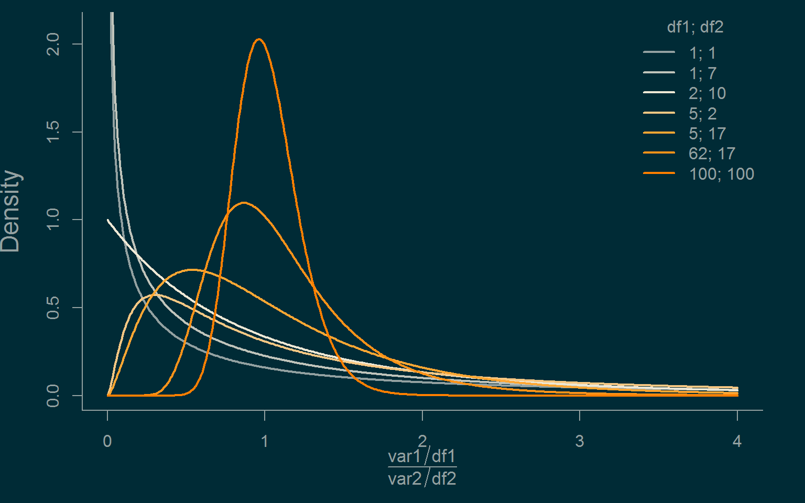
F -distribution
Why is this useful?
- Since
\(\chi^2\) -distribution is used to assess the fit of a model to data, we can use the ratio of two\(\chi^2\) -distributed statistics to compare the fit of two competing models - Doing statistics always includes model comparison, just sometimes implicitly
- Is a particular linear model a good fit?
- Yes, if it fits better than the null (intercept-only) model, i.e., the mean
Take-home message
- There are many well-described probability distributions
- They differ in shapes and are specified by differing numbers and kinds of parameters but the principle is the same
- They all allow us to quantify the probability of an arbitraty interval of values under given distribution
- The probability of an interval, e.g., \([3,\infty)\) will be different under different distributions
\(\chi^2\) -distribution describes the distribution of sums of squares and the sampling distribution of SD of samples from a normally distributed population- Useful for assessing goodness of fit of a model
Take-home message
- t-distribution is the ratio of a random normal variable and an independent
\(\chi^2\) variable- Useful for testing whether a statistic comes from a sampling distribution with a given \(\mu\) when \(\sigma\) is unknown.
- Does \(b\) come from a sampling distribution of \(\beta = 0\), i.e., is there a relationship between two variables?
- Does our sample mean \(\bar{x}\) come from a sampling distribution where \(\mu\) is, say, 100?
- Is the difference between \(\bar{x}_1\) and \(\bar{x}_2\) from a distribution with \(\mu = 0\), i.e., is there a difference between two groups?
- F-distribution is the ratio of two scaled
\(\chi^2\) variables- Useful for comparing two competing models
Retain or Reject
that is the question
Putting it all together
- let’s revisit our IQ and age example
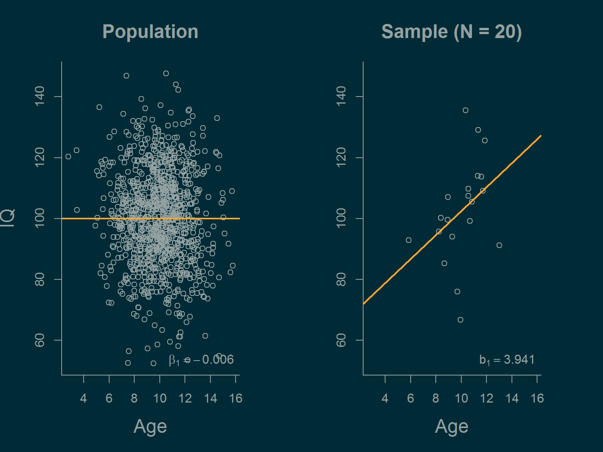
Hypotheses
- Model:
\(IQ = \beta_0 + \beta_1 \times age + \epsilon\) - Research hypothesis:
- There is a relationship between age and IQ
- \(H: \beta_1 \ne 0\)
- Null hypothesis:
- There is no relationship between age and IQ
- \(H_0: \beta_1 = 0\)
Test statistic and its distribution
- We want to know if the \(b_1 = 3.941\) we found is likely to come from a sampling distribution where \(\beta_1 = 0\) (this is the null)
- \(\beta_1 = 0\) is thus the expected \(\mu\) of the sampling distribution
- \(b_1 - \beta_1\) is the distance between observed and expected
\(b_1\) - If we knew the SE of this sampling distribution, we could use it to scale the distance to get a standard normal distribution – \(\frac{b_1 - \beta_1}{SE_b}\)
- We can estimate
\(\widehat{SE}_b=\sqrt{\frac{\sum_{i=1}^n\varepsilon_i^2}{(n-2)\sum_{i=1}^n(x_i-\bar{x})^2}}\)
Test statistic and its distribution
- We can then standardise the distance between observed and expected \(b_1\) as \(\frac{b_1 - \beta_1}{\widehat{SE}_b}\)
- Since we expect that \(\beta_1 = 0\), the statistic of interest is \(b_1/\widehat{SE}_b\)
- Relying on CLT, we can assume that \(b_1\) is from a normal distribution
- \(\widehat{SE}\) is a
\(\chi^2\) -distributed variable with \(df = n-2\) - This means that \(b_1/\widehat{SE}_b\) follows a t-distribution with \(df = n-2\)
Data and analysis
- We tested 20 imaginary people (definitely not enough!)
- We fit the linear model and found the value of \(b_1 = 3.94\)
m1 <- lm(iq[sample] ~ age[sample])
coef(m1)
(Intercept) age[sample]
63.124858 3.940927 Observed statistic
- The value of associated test statistic is \(t = \frac{b_1}{\widehat{SE}_b} \approx \frac{3.941}{2.245} \approx 1.755\)
(ss_resid <- sum(resid(m1)^2)) # sum(epsilon^2)
[1] 4599.261
(n <- length(sample)) # sample size
[1] 20
# sum of sqares of age
(ss_age <- sum((age[sample] - mean(age[sample]))^2))
[1] 50.69264
(se <- sqrt(ss_resid/((n - 2) * ss_age))) # estimated SE of b_1
[1] 2.245098
(t <- coef(m1)[2]/se) # t-statistic
age[sample]
1.755347 Probability of the observed statistic
- Given that we know our t-value comes from a t-distribution with \(df = 18\), we know that the probability of getting \(|t| \geq 1.755\) is \(.096\), if the true t-value is zero, i.e., if \(\beta_1 = 0\)
- t-value can be either positive or negative because \(b_1\) can be non-zero in two directions
- We are therefore looking at both tails of the t-distribution
- This is known as a two-tailed test of significance
# double the probability of t >= 3.941
pt(t, n-2, lower.tail = F) * 2
age[sample]
0.09620383 Probability of the observed statistic
- Two-tailed test that \(t \leq -1.755\) OR \(t \geq 1.755\)
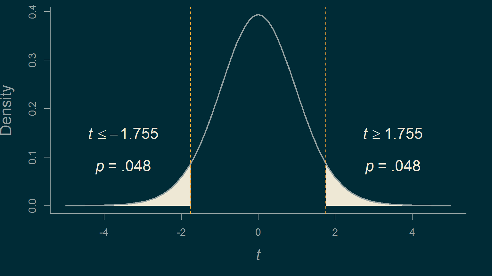
Decision
- Conventionally, we require the probability of a statistic under \(H_0\) to be less than 5% to consider the result unlikely enough to reject the null
- Other conventional levels of significance are \(p < .01\) and \(p < .001\)
- The p-value is the probability of getting a result at least as extreme as the observed one if the null is true
- The observed t-value based on \(b_1 = 3.94\) and a sample of 20 is relatively likey (\(p > .05\)) in a world where \(\beta_1 = 0\)
- We retain the null hypothesis and say that we found no evidence of a relationship between age and IQ
Sanity check
- We don’t have to do the calculations by hand!
summary(m1)$coefficients
Estimate Std. Error t value Pr(>|t|)
(Intercept) 63.124858 22.939236 2.751829 0.01312103
age[sample] 3.940927 2.245098 1.755347 0.09620383
# b_1 = 3.940927
# se = 2.245098
# t-value = 1.755347
# p-value = 0.09620383Take-home message
- NHST is a flawed but widely-used framework
- Statistical hypotheses are statements about values of population parameters
- We fit statistical models to data to derive estimates of these parameters based on samples
- We test whether the observed value of the estimate is likely to come from the sampling distribution of the population parameter in a world where \(H_0\) is true
- To get the likelihood, we need a test statistic and it’s characteristic distribution
Take-home message
- p-value is the probability of observing a value of test statistic at least as extreme (far away from bulk of the distribution) as the one in the sample, if the null hypothesis is true
- p-value is the tail area of the distribution of the test statistic bounded by its observed value
- One-tailed p-values are one-directional
- two-tailed p-values look at
\(P(|statistic| \geq observed\ value)\)
Take-home message
- Conventional criteria for statistical significance are
\(p < .05\) ,\(p < .01\) , and\(p < .001\) - If the obtained p-value is smaller than .05, we consider the result statistically significant and reject the null hypothesis
- If \(p \geq .05\), we retain the null because the result is not statistically significant
- Statistical significance is a technical term – it is not related to practical significance
- The entire process is the same for all statistical tests we will talk about
One more time (with feeling)
The p-value denotes the probability that we get the result we observed or a more extreme one even if, in reality, the null hypothesis is true